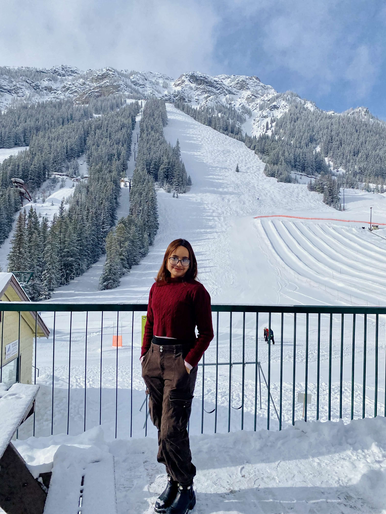
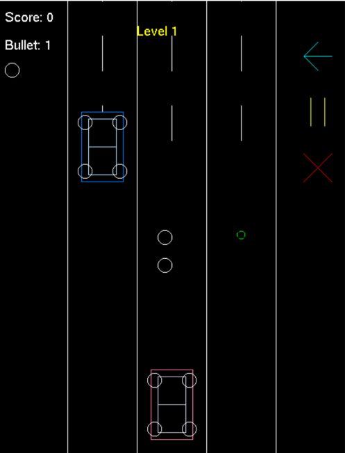
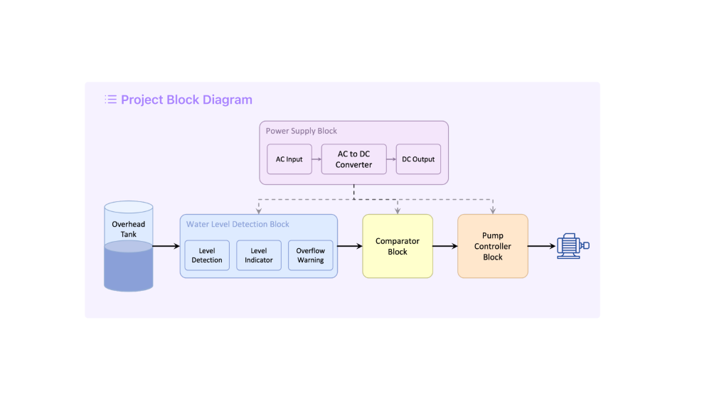

|
Research Interests:
Graduate Student, University of Alberta Sara is currently pursuing her MSc in Computing Science (thesis-based) at the University of Alberta. She is under the supervision of Dr. Bailey Kacsmar in PUPS: Practical Usable Privacy and Security Lab. Her previous research focused on Natural Language Processing, Applied Cryptography, and Computer Vision.
Email /
GitHub /
LinkedIn /
ResearchGate /
Google Scholar |
 |
Education
Master of Science in Computing Science [Winter 2026 - Present] |
|
Bachelor of Science in Computer Science [Spring 2021 - Fall 2024] |
Research
|

|
Encrypting Sentiments: A Study on Integrating Encryption Module with NLP Pipeline to Analyze Emotions While Ensuring Security
2024
Natural Language Processing, Privacy, and Cryptography |

|
Detecting Derogatory Comments on Women Using Transformer-Based Models
2023 IEEE International Conference on Communication, Networks and Satellite (COMNETSAT)
Natural Language Processing, Fine-tuning Transformers |

|
Automated Image Caption Generation using Deep Learning
2023 26th International Conference on Computer and Information Technology (ICCIT)
Natural Language Processing, Image Captioning, Computer Vision |
|
She led courses on programming, data structures, digital logic, algorithms, and statistics in the Department of Computer Science & Engineering, School of Data & Sciences, Brac University [October 2023 - September 2025]
|
Academic Project
|
|

|
Confident Driver: Racing and Shooting in One Game, Real-time graphics and game development, Fall 2024
CSE423 Computer Graphics
The car shooter game is implemented using OpenGL to render graphics and handle real-time interactions using OpenGL. |

|
Fitness and Nutrition Platform
CSE 471: System Analysis and Design
Web application, Summer 2024 |

|
Fake-News-Detection-Using-Different-Predictive-Models
CSE 422: Artificial Intelligence
Machine Learning Project, Spring 2023 |
|

|
Automatic Water Level Detection and Control
CSE251: Electronic Devices and Circuits
Electronics Project, Spring 2023 |

|
University Information Desk
CSE 370: Database Systems
Web application, Fall 2022 |

|
Automatic Street Light Control Circuit using LDR & Transistor
CSE260: Digital Logic Design
Electronics Project, Summer 2022 |
|
|